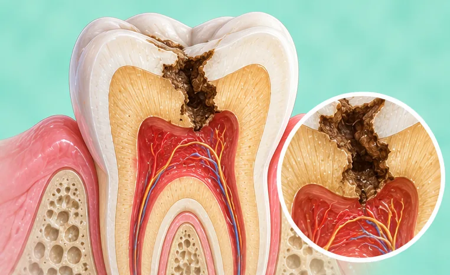
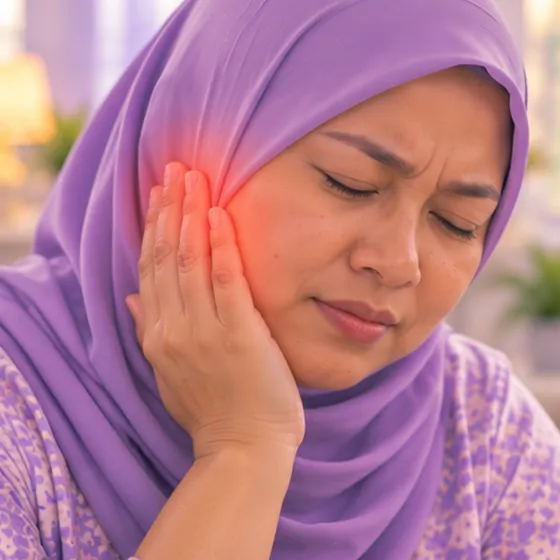
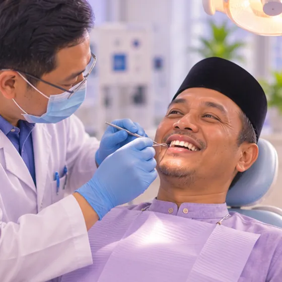

Radang saraf gigi (pulpitis)
Keradangan pada bahagian dalam gigi yang lembut, tempat saraf gigi berada
Apa itu
Bahagian tengah gigi yang lembut (pulpa), yang mengandungi saraf dan salur darah, menjadi radang, selalunya akibat gigi reput yang dalam atau retak, dan boleh menyebabkan sakit gigi yang perlu dilihat oleh doktor gigi.
- Di dalam gigi
- Semua umur, juga kanak-kanak
- Sakit gigi, sensitif panas/sejuk
- Jumpa doktor
- Doktor gigi; pakar saraf gigi (endodontis) jika perlu
- Biasa pada
- Sesiapa yang mempunyai gigi reput dalam, gigi retak atau tampalan dalam
- Berjangkit
- Tidak
- Perjalanan
- Biasanya tidak hilang sendiri; doktor gigi perlu memeriksa gigi itu
Tanda biasa
Sakit gigiOdontalgia 
Gigi ngilu bila sejuk atau panasKepekaan dentin 
Sakit merebak ke telinga atau rahangSakit rujukan
Tanda-tanda lain
- Sakit apabila makan makanan manis atau menggigit
- Lubang, retak atau tompok gelap yang kelihatan pada gigi
Mengapa ia berlaku

Jatuh, hentakan atau kemalangan jalan rayaTrauma
Punca lain
- Gigi reput (berlubang) yang dalam ialah punca yang paling biasa
- Tampalan yang dalam, atau kerja pergigian berulang pada gigi yang sama
- Gigi haus akibat mengerot, atau penyakit gusi yang sampai ke akar
- Makanan dan minuman bergula serta memberus gigi kurang bersih menjadikan gigi lebih mudah reput
Jumpa doktor dahulu jika
- Muka atau leher bengkak dengan sukar bernafas atau menelan: hubungi 999 atau ke hospital segera
- Demam, pipi atau muka bengkak, atau nanah dan rasa tidak enak dalam mulut: jumpa doktor gigi atau doktor hari ini
- Sakit gigi yang teruk atau berdenyut sehingga tidak boleh tidur: jumpa doktor gigi secepat mungkin
- Sakit gigi yang tiba-tiba hilang, tetapi gigi masih gelap, longgar atau sakit bila disentuh: tetap jumpa doktor gigi
- Sakit gigi pada kanak-kanak, atau pada orang yang menghidap diabetes atau sistem imun lemah: jumpa doktor gigi dengan segera
Jika mana-mana berkenaan, sila jumpa doktor sebelum sesi.
Halaman ini ialah maklumat am. Sila terus mengambil ubat biasa anda dan terus berjumpa doktor.
Teruskan mengambil ubat biasa anda dan terus berjumpa doktor. Sesi kami ialah sokongan lembut dan tidak menggantikan rawatan perubatan.
Menjaga diri

Pemeriksaan doktor gigi berkalaPemeriksaan pergigian
Lebih banyak cara menjaga diri
- Elakkan makanan dan minuman yang terlalu panas, sejuk atau manis pada bahagian itu
- Kunyah di sebelah lain, dan memberus dengan lembut di sekeliling gigi yang sakit
- Tanya doktor, doktor gigi atau ahli farmasi sebelum mengambil sebarang ubat untuk sakit
- Kurangkan snek dan minuman bergula, dan memberus gigi dua kali sehari
Beritahu ahli terapi anda
- Demam atau jangkitan aktif
- Diabetes atau deria kulit berkurang
- Penyakit jantung
- Kehamilan
Ahli terapi anda akan menyemaknya bersama anda sebelum bermula.
Soalan dan jawapan
Apakah Radang saraf gigi (pulpitis)?
Keradangan pada bahagian dalam gigi yang lembut, tempat saraf gigi berada. Bahagian tengah gigi yang lembut (pulpa), yang mengandungi saraf dan salur darah, menjadi radang, selalunya akibat gigi reput yang dalam atau retak, dan boleh menyebabkan sakit gigi yang perlu dilihat oleh doktor gigi.
Apakah tanda biasa Radang saraf gigi (pulpitis)?
Sakit gigi · Gigi ngilu bila sejuk atau panas · Sakit merebak ke telinga atau rahang
Mengapa Radang saraf gigi (pulpitis) berlaku?
Jatuh, hentakan atau kemalangan jalan raya
Bagaimana menjaga diri dengan Radang saraf gigi (pulpitis)?
Pemeriksaan doktor gigi berkala
Bolehkah sesi AI Body Master membantu Radang saraf gigi (pulpitis)?
Sesi ialah sokongan meridian tanpa jarum yang lembut untuk kesejahteraan anda. Ia tidak merawat atau menyembuhkan Radang saraf gigi (pulpitis) dan tidak menggantikan ubat atau doktor anda. Beritahu ahli terapi anda sebelum sesi bermula.
Keadaan berkaitan
- Bibir mengelupas (keilitis eksfoliatif)
- Radang bibir (keilitis)
- Lidah geografik
- Jangkitan kulat dalam mulut (kandidiasis)
- Fluorosis gigi
- Ulser aftus berulang
- Soket kering (selepas cabut gigi)
- Sista periapikal (sista akar gigi)
- Penyakit Alzheimer
- Katarak
- Dermatitis seboroik (ruam jenis kelemumur)
- Keratosis tonsil
Rujukan: General information based on public health sources such as Mayo Clinic, NHS, Cleveland Clinic and NCBI StatPearls.
Halaman dikemas kini: 2026-11-04